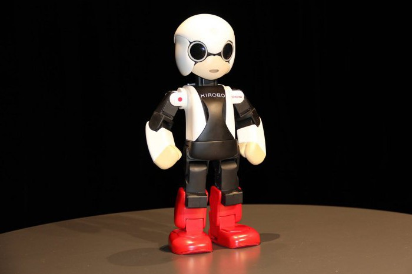
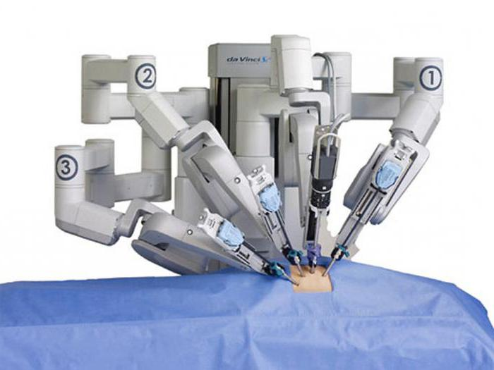
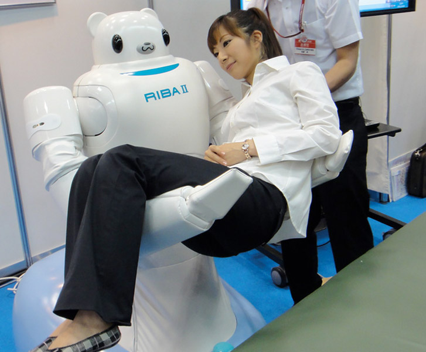

Применение роботов в медицине
В каких сферах и для чего используют роботов? В хирургии, в качестве сиделок для детей и пожилых, в телемедицине и даже для доставки лекарств.
Хирургия
Робот «Леонардо» в медицине получил особую популярность. Он был создан, чтобы в будущем заменить хирургов. На сегодняшний день этот самостоятельный механизм весом 500 кг, оснащенный четырьмя «руками», способен справляться с огромным количеством задач. Три его конечности оснащены миниатюрными инструментами для выполнения сложнейших операций. На четвертой «руке» находится крошечная видеокамера.

То, как действуют такие роботы в медицине, фото демонстрирует лучше всего. Да Винчи способен оперировать через самые крошечные разрезы, ширина которых составляет не более нескольких сантиметров. Благодаря этому после хирургического вмешательства у пациента не остается безобразных шрамов.
В процессе работы «Леонардо» на некотором отдалении от него сидит медицинский работник, который управляет пультом. Благодаря современному джойстику врач может выполнять сложнейшие манипуляции с ювелирной точностью. Все действия передаются конечностям робота, который повторяет движения пальцев рук.
Хирургическая система Да Винчи демонстрирует "операцию" по восстановлению кожицы винограда.
В будущем подобная технология может быть использована для проведения серьезных хирургических операций на человеке.
Присмотр
Робот Риба родом из Японии. Его представили в 2009 году. Главное его назначение — это с помощью своих длинных и сильных рук укачивать больных и пожилых людей. Это отличный помощник в клиниках, так как он может переносить пациентов с места на место, или же перекладывать из коляски в кровать.
В 2009 представили RIBA II. Эта версия робота может поднимать пациентов прямо с пола, тогда как первый робот мог брать их только с коляски или кровати. Также грузоподъемность возросла до 176 фунтов, то есть около 80 кг, что на 41 фунт, или 18,5 кг больше, чем в первой версии.
Зачем японцам вообще нужен такой робот? Все дело в долгожительстве. В Японии к 2015 году количество пожилых людей, которым будет нужен уход, по прогнозам достигнет пяти с половиной миллионов человек. Вот и представьте, скольким медсестрам и санитарам придется поднимать ежедневно больных с футона на коляску, с коляски на кровать, обратно и так далее. Роботы для этих целей подходят лучше, а медсестры пусть занимаются своим делом — просто заботятся о пожилых.
Помощь медсестрам
Еще один способ избавить медсестер от рутинной работы, занимая их время более полезными делами — это робот от Murata Machinery Ltd, предназначенный для выдачи лекарств.